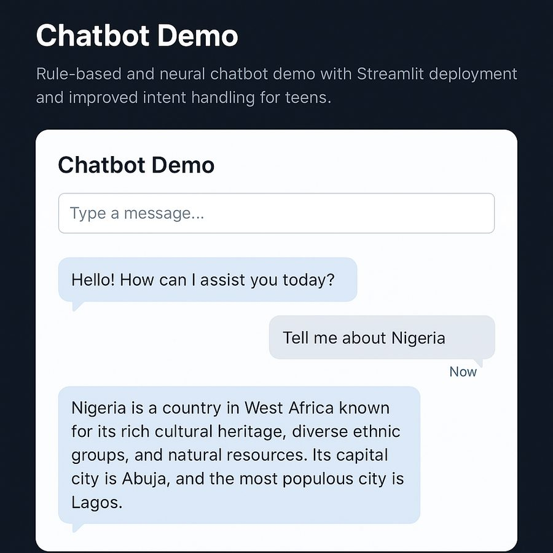
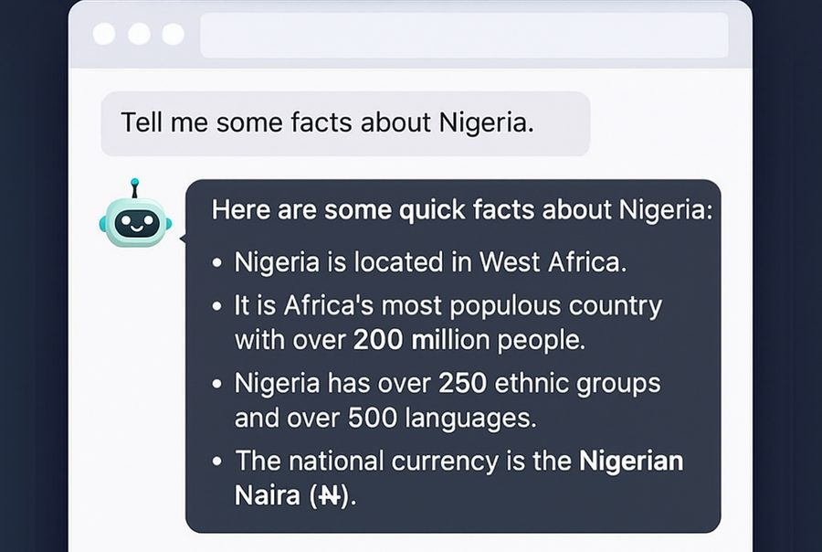
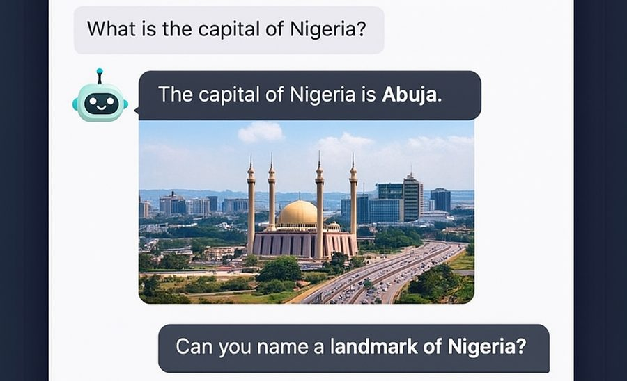

AI chatbot
A rule-based and neural chatbot with a Streamlit interface, built as a practical teaching tool for teens aged 12 to 18.
Overview
This project combines a simple rule-based chatbot with an optional neural intent classifier. It was deployed with Streamlit so students could test it in a friendly web interface and then extend it themselves.



Key features
- Rule-based chatbot with pattern matching
- Neural intent classifier using bag-of-words or embeddings
- Streamlit interface for easy testing
- Simplified logic that teens can read and change
- Intents and responses that are easy to expand
Development workflow
- Intent design: define intents, patterns and responses.
- Rule-based matching: extract keywords and map them to predefined responses.
- Neural model (optional): train a simple classifier to detect intents.
- Streamlit deployment: build a text-box interface for interactive chats.
- Testing and refinement: improve responses using student feedback.
Sample code
import random
responses = {
"greeting": ["Hello!", "Hi there!", "Nice to meet you!"],
"bye": ["Goodbye!", "See you later!", "Bye for now!"]
}
def get_intent(message):
message = message.lower()
if "hi" in message or "hello" in message:
return "greeting"
elif "bye" in message:
return "bye"
return "unknown"
def chatbot_reply(message):
intent = get_intent(message)
if intent in responses:
return random.choice(responses[intent])
return "I'm not sure I understand. Can you rephrase?"
Outcome
Students learned the basics of chatbots, natural language processing and intent classification, and were able to extend the bot on their own.